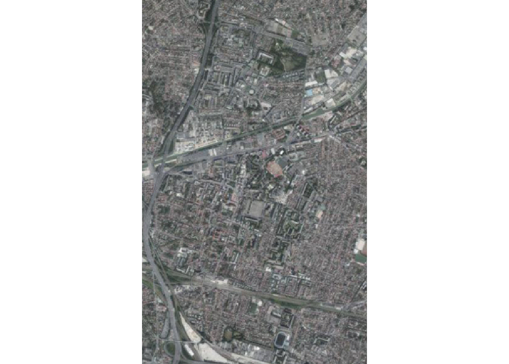
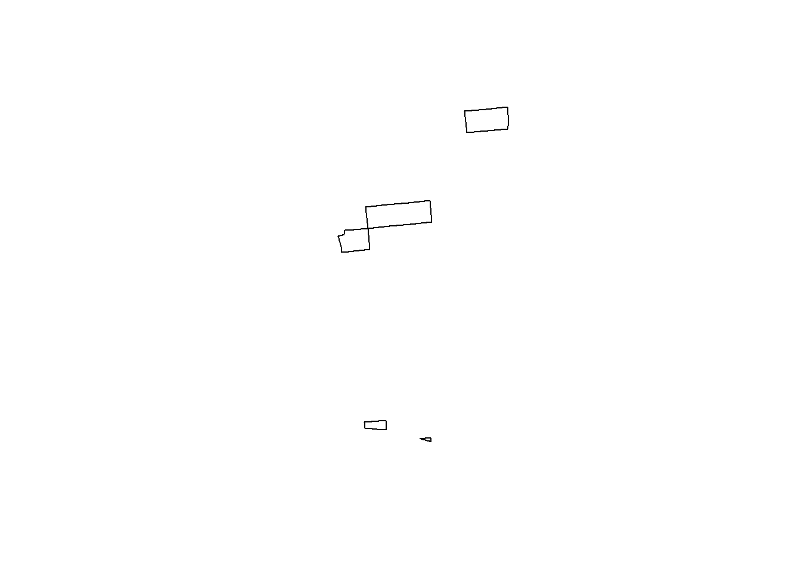
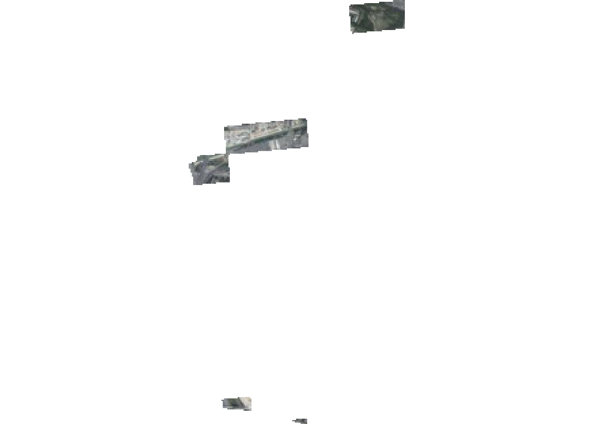

Code
commune <- read.csv("data/framaCalcCours9.csv")
# Lecture du fichier
commune <- commune [, c(3)]
commune <- unique(commune)
commune <- commune[-c(34:35)]L’objet de ce cours est de faire des géotraitements avec R et markdown.
Utilisation du script 2 dans le modèle de projet disponible sur github https://github.com/beababa/modeleProjet
Mais cette fois ci,
créer le script2.Rmd
utiliser l’autocomplétion en tapant les commandes.
De plus, nous allons utiliser une nouvelle libraire : happign
Une librairie très simple d’utilisation qui permet de récupérer les données ign.
librairie happign
Pour mémoire, faire le point sur
Autre référence incontournable :
EXO 1 = Recopier et commenter les étapes avec le #
Quelle méthode avons nous utiliser en cours pour récupérer les géométries ?
Examiner la simplicité de la syntaxe de la librairie.
Linking to GEOS 3.13.1, GDAL 3.11.4, PROJ 9.7.0; sf_use_s2() is TRUEPlease make sure you have an internet connection.Use happign::get_last_news() to display latest geoservice news.
Attachement du package : 'happign'L'objet suivant est masqué depuis 'package:base':
within⠙ iterating 1 done (0.24/s) | 4.1siterating ■■■■■■■■■■■■■■■■■■■■■■■■■■■■■■■ 100% | ETA: 0s⠙ iterating 1 done (0.32/s) | 3.1s
iterating ■■■■■■■■■■■■■■■■■■■■■■■■■■■■■■■ 100% | ETA: 0sDeleting layer `commune' using driver `GPKG'
Writing layer `commune' to data source `data/projet.gpkg' using driver `GPKG'
Writing 33 features with 5 fields and geometry type Multi Polygon.Cela fonctionne égalemetn pour les rasters
EXO 2 : En adaptant le code, couper aux carreaux manquants de sa commune.
La donnée carreau manquant est dans le fichier cours10.gpkg
Using cached file: C:\Users\forma\L6ECSIG\data\bondy.tifterra 1.9.1
Attachement du package : 'terra'L'objet suivant est masqué depuis 'package:happign':
relate
On reprend l’idée d’examiner les carreaux absents


Observer un seul carreau
Que dire de la qualité de l’orthophoto ?
EXO 3 = Trouver la fonction pour le centroide et les tampons sur la cheasheet de la librairie sf et le faire à partir du centroide de votre commune.
Malheureusement, le get_isochrone de happign ne fonctionne pas.
Utiliser rgeoservices